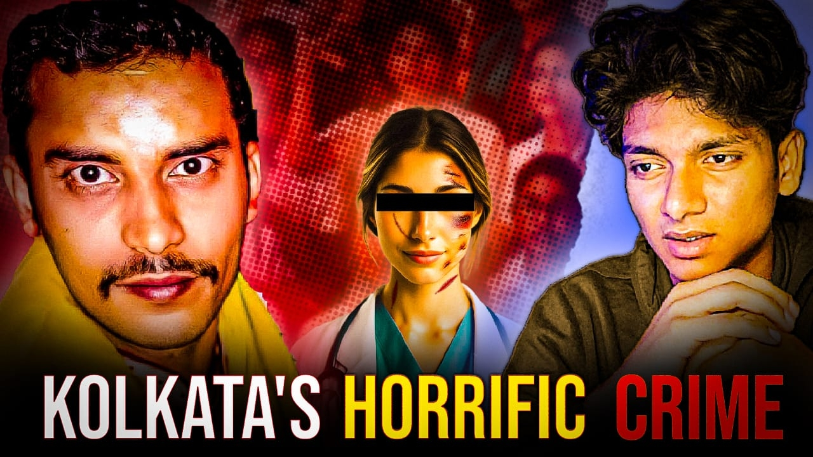

Digital Content • YouTube • Visual Storytelling
Ideas into impactful content.
I’m Aman Poddar, a B.Com graduate and digital content professional with hands-on experience in YouTube content creation, video editing, thumbnail design, image editing and audience-focused visual storytelling.
YT ContentResearch to publishing
5 YearsAdobe Photoshop experience
Multi-formatVideos, reels & creatives
Selected Work
YouTube Thumbnail Designs
A selection of news, current affairs and storytelling-focused thumbnails created with emphasis on visual hierarchy, emotional impact and clear communication.

Geopolitical & Current Affairs

High-Impact News Thumbnail

Politics & Election Coverage
Channel Branding
Banners & Visual Identity
Examples of wide-format visual work created for digital platforms and content presentation.


YouTube Work
Channels & Content Platforms
Explore the YouTube channels connected to my content work and the type of digital storytelling they represent.
The Geovanta
Explore informative, current affairs and story-driven digital content.
Open Channel ↗Crime Unfold
Explore crime and investigative storytelling content with visually engaging presentation.
Open Channel ↗Capabilities
Skills Across the Content Workflow
A blend of creative production and practical content operations suited to YouTube, digital media and fast-moving content environments.
Creative & Technical Skills
YouTube Content CreationContent ResearchContent PlanningVideo EditingAdobe Premiere ProThumbnail DesignAdobe PhotoshopAdobe LightroomImage EditingPhoto ManipulationRetouchingColor GradingVoice EditingReels EditingPoster DesignSocial Media Content
YouTube & Digital Content Operations
Research & Content Planning
Developing content ideas and preparing material for audience-focused videos.
Production & Editing
Video editing, voice cleanup and visual storytelling for engaging presentation.
Packaging for YouTube
Creating thumbnails and supporting titles, descriptions and publishing workflow.
Digital Media Adaptability
Working across videos, reels, promotional creatives and different content formats.
About Me
Creative work with a focus on the audience.
I enjoy taking an idea, story or topic and turning it into content that is visually engaging and easy to understand. My experience spans YouTube content creation, video and image editing, thumbnail design, promotional creatives and digital media.
I am particularly interested in opportunities where creativity and content strategy come together—whether that means building engaging videos, strengthening a channel's visual presentation or supporting a consistent digital content workflow.